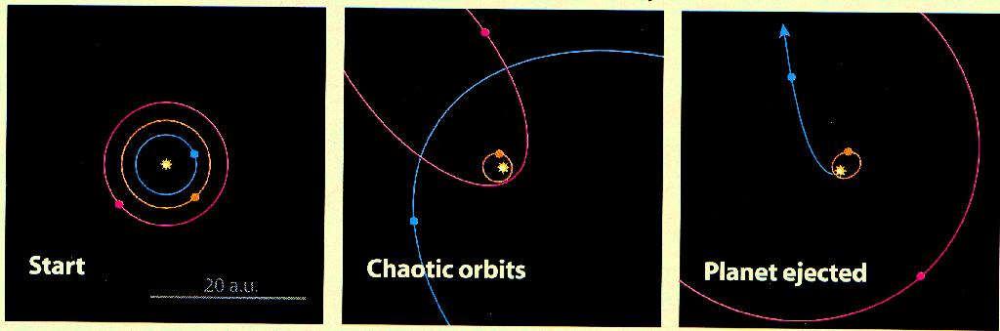
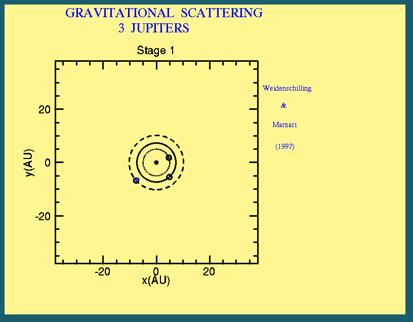
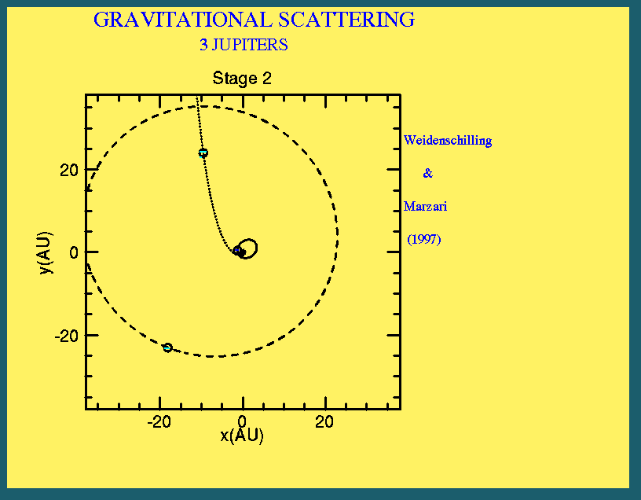
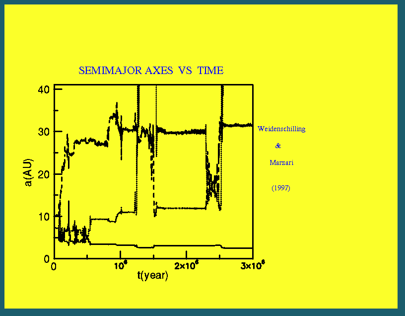
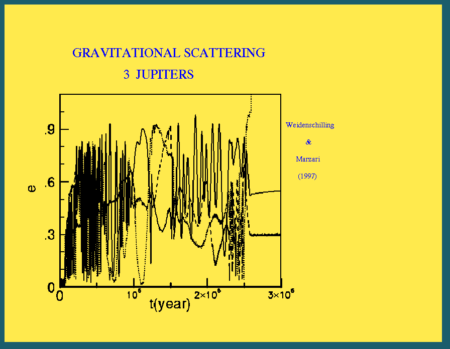

Gravitational Scattering as a
Possible Origin for the Giant Planets
at Small Stellar Distances
Weidenschilling and Marzari 1996, Nature, v384, p619
If a system of three or more giant planets form about a star,
their orbits may become unstable as they gain mass by accreting gas from the
circumstellar disk; subsequent gravitational encounters among these
planets can eject one from the system while placing the others
into highly eccentric orbits both closer and farther from the star.




--- Evolution of semimajor axis and eccentricity of a trio of Jupiter-mass
planets orbiting a solar-mass star. Initial orbits are circular and
coplanar, at distances of 5.0, 7.25, and 10 AU from the star. Their orbits
become crossing within a few million years. After a series of close encounters
the original inner planet is ejected hyperbolically. The planet originally in
the outermost orbit is left in a close, eccentric orbit (a=2 AU, e=0.78).
The remaining planet has a distant orbit (a=29 AU, e=0.44). (From
Weidenschilling and Marzari 1996, Nature, 384, 619)